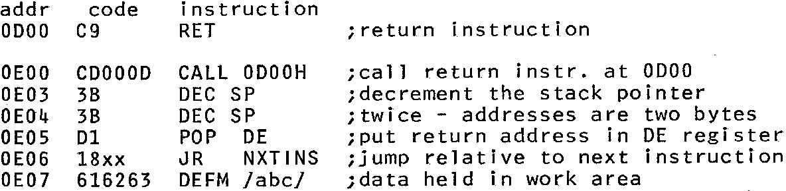

INMC 80 News |
February–April 1981 · Issue 3 |
| Page 38 of 55 |
|---|
compulsion enough to ensure sleepness nights, periods of mental abstraction, and withdrawl symptoms when I go on holiday. You have been warned.
The next episode will go on to talk about some more ‘correct’ ways of approaching assembler programming, deal with relative jumps, and introduce the subject of ‘labels’. In the mean time, see if you can duplicate the second program I wrote. That started with an asterisk in the centre of the screen, followed after a delay, by a ring of 8 asterisks around it, repeating the routine 4 or five times over to produce an eight pointed radial star stretching to the corners of the screen. The star having expanded to the edge of the screen then shrank again back to a single asterisk. After the time it took to write the blinking asterisk routine, that one only took about 5 hours, but I found out what the IX and IY registers were all about.
If you have ever tried to write relocatable code (say a subroutine that must be executable when stored anywhere in memory) you will know that invariably you need to find out where you are (where the subroutine has been put in memory this time).
For those of you who have not tried, a relocatable subroutine can be of great use because it can be included in any program, at a different address (place in memory), and only the program using it has to know where it is. To make this work however, all calls and all references to a data storage or work areas within the routine must not be at fixed addresses, but must be calculated from a known position. The result of the calculation is known as an offset.
The problem is the ‘known position’. This needs to be found without the subroutine being told. A very simple method is to call a return instruction at a known place (say in the monitor), decrement the stack pointer and POP the return address into a register pair.
e.g. the routine starts at 0E00
Note that the address now in register pair DE is 0E03 the address to which control returned after the call. Any calculations must be based on this address. To find the work area address 05 must be added to the value in DE.
Now you know where you are. Easy really isn’t it.
| Page 38 of 55 |
|---|